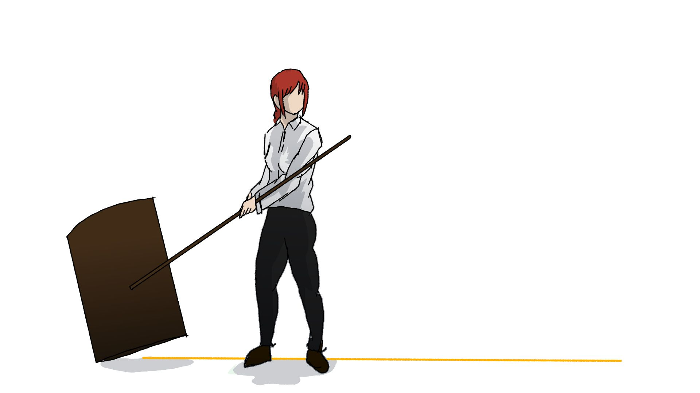
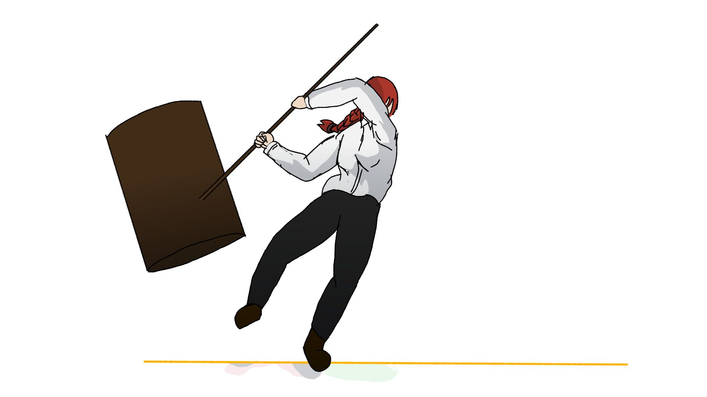
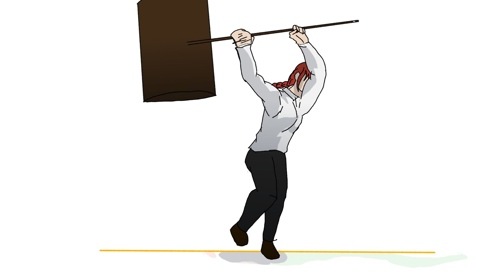
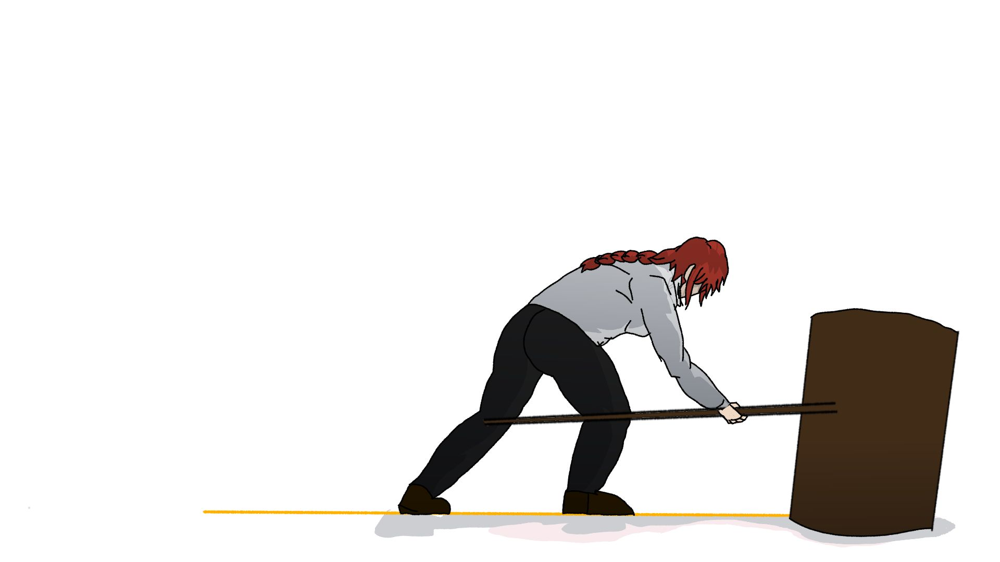

Now we start animating!!
After the Storyboarding is done,the storyboards are then given to the Key animator.
Key Animation is the development of Key Frames.Key frames are basically the starting and the ending point of the animation.
So the stating point of a animation would have a keyframe thend point would have a key frame ,and the betwwen point of the action would have a frame that is known as break-in pose
The starting point(key frame):

The midpoint(break-in frame/s):


The end point(key frame):

The actual animation:
This cuts key-animation and inbettweening was done by Me and was corrected by Probably Pretnecious(director)
We will talk about inbetwwening and corrections later
Can you notice all the keyframes in this cut??
Also you might wonder that the final cut looks a lot diffrent than only the key frames and that because keyanimation isn't the only process of animation ,
After key animation there are multiple other processes to finish the cut such as:
We are going to talk about all these in detail in coming chapter
IF you have been paying attention than you may notice that the key animtor has to make the key animation out of the storyboard,
So what about the creative freedom of the animtor,does he have to strictly follow the storyboard,isn't that just glorified slavery??since he can' do anthing out of the box due to lack of good storyboard??
A simple answer to that would be :
Animators are allowed to deviate from the story board till it represents the same thing intended in the storyboard: